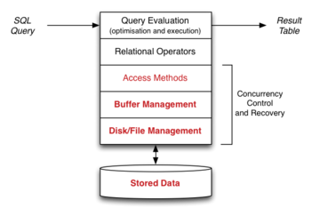

From SQL text to result set: parsing, binding, optimization, and execution
Learning Objectives
Trace a SQL query through the full processing pipeline from parsing to output
Explain what a query plan is and how the query optimizer chooses among alternative plans
Describe three join algorithms: simple nested loop, block nested loop, and sort-merge join
Estimate the I/O cost of a selection, projection, and join using the page-count cost model

Figure 39.1 — The query processing pipeline: SQL text passes through parser, binder, optimizer, and executor to produce a result
1. The Query Processing Pipeline
When you submit a SQL query to a DBMS, it does not execute the SQL text directly. Instead, it passes through a multi-stage pipeline:
SQL Text
│
▼ [Parser]
Parse Tree (syntax check, SQL grammar)
│
▼ [Binder / Semantic Analysis]
Logical Query Plan (table names resolved, types checked, views expanded)
│
▼ [Query Rewriter]
Rewritten Logical Plan (subquery flattening, predicate pushdown)
│
▼ [Query Optimizer]
Physical Query Plan (access methods chosen: index scan vs. heap scan; join order and algorithm selected)
│
▼ [Executor / Volcano Iterator Model]
Result tuples (streamed or materialized)
1.1 Parser
The parser checks SQL syntax against the grammar and produces a parse tree. At this stage, table and column names are just strings; no validation against the catalog is performed yet.
1.2 Binder (Semantic Analysis)
The binder resolves names against the system catalog (the metadata store that describes all tables, columns, indexes, views, and constraints). It checks that all referenced tables and columns exist, that types are compatible, and expands view definitions by substituting their underlying SQL.
1.3 Query Rewriter
The rewriter applies algebraic transformations to simplify the query before optimization. Key rewrites include:
Predicate pushdown: move WHERE predicates as close to base tables as possible (reduces intermediate result sizes)
Subquery decorrelation: convert correlated subqueries into joins where possible
Projection pushdown: remove unnecessary columns early to reduce data flow
2. The Query Optimizer
The optimizer is the most complex component of a DBMS. Its job is to choose an efficient physical query plan from among many logically equivalent alternatives.
2.1 Search Space
The number of possible plans for a query with n tables grows exponentially: for n=10 tables there are over 17 million join orderings. Optimizers use:
Heuristics: push down selections and projections first; prefer left-deep join trees
Dynamic programming: build up optimal plans for subsets of tables (System R style)
Cost estimation: use statistics (histogram of column values, table cardinality, index availability) to estimate I/O cost
2.2 Statistics and Cardinality Estimation
The optimizer uses catalog statistics to estimate the number of tuples that will pass each operator:
Selectivity of predicate P = fraction of tuples that satisfy P
Example: table has 100,000 rows, column salary has 500 distinct values
Predicate: salary = 50000
Selectivity = 1/500 = 0.002 → estimated output = 100,000 × 0.002 = 200 rows
3. Physical Operators: Selections and Projections
3.1 Selection
Access Method
I/O Cost
When Chosen
Heap scan (no index)
B
No index, or predicate selects >10% of tuples
Clustered B+ tree index
log_d(B) + pages_in_range
Equality or range on the clustered key
Unclustered B+ tree index
log_d(B) + matches
Equality on secondary key; high selectivity only
Hash index
~1–2 pages
Equality only; hash index exists on column
3.2 Projection
Projections can eliminate duplicate values (SQL SELECT DISTINCT). Duplicate elimination is implemented using either sorting (sort all projected tuples, scan for duplicates) or hashing (hash each projected tuple; within each bucket, check for duplicates). Sorting costs O(B log B); hashing costs O(B) on average.
4. Join Algorithms
Joins are typically the most expensive operations in a query. We compare three algorithms for the join R ⋈ S on a common attribute.
Notation:
B_R = pages in R, B_S = pages in S
T_R = tuples in R, T_S = tuples in S
P = buffer pool frames available
Assume B_R ≤ B_S (R is the smaller "outer" relation)
4.1 Simple Nested Loop Join (SNLJ)
For each tuple r in R:
For each tuple s in S:
If r.attr = s.attr: output (r, s)
I/O cost = B_R + (T_R × B_S)
= B_R + T_R × B_S
For R = 1,000 pages, S = 10,000 pages, 100 tuples/page: cost = 1,000 + 100,000 × 10,000 = 1 billion I/Os. Only feasible for tiny tables.
4.2 Block Nested Loop Join (BNLJ)
For each chunk of (P-2) pages from R:
Read all of S once:
For each page of S: match all tuples in chunk against all tuples in S-page
I/O cost = B_R + ⌈B_R/(P-2)⌉ × B_S
Phase 1: Sort R on join attribute (external merge sort) → cost ≈ 4 × B_R
Phase 2: Sort S on join attribute → cost ≈ 4 × B_S
Phase 3: Merge the two sorted relations → cost = B_R + B_S
Total cost ≈ 4B_R + 4B_S + (B_R + B_S) ≈ 5(B_R + B_S)
= 5(1,000 + 10,000) = 55,000 I/Os
Sort-merge join is excellent when the data can be sorted once and reused for multiple joins, or when the data is already sorted (e.g., from a clustered B+ tree scan).
4.4 Hash Join
Phase 1 (Build): Hash R into B/2 partitions on disk using h₁(key)
Phase 2 (Probe): For each partition of R, load into memory and hash with h₂;
scan corresponding partition of S, probe the in-memory hash table
Total cost ≈ 3(B_R + B_S) [with sufficient buffer frames]
= 3(1,000 + 10,000) = 33,000 I/Os
Hash join is typically the fastest for equi-joins when enough buffer frames are available. It does not support inequality joins or range predicates on the join attribute.
5. Join Algorithm Comparison
Algorithm
I/O Cost (example)
Best When
Limitation
Simple NLJ
~1 billion
Both tiny (fit in memory)
Terrible on disk
Block NLJ
~111,000
Small buffer; no index
Requires small outer relation
Sort-Merge
~55,000
Data already sorted; range joins
Sort cost dominates
Hash Join
~33,000
Equi-joins; large tables
No range/inequality joins
Index NLJ
~10,000
Index on inner relation; outer is small
Requires index
6. The Iterator (Volcano) Model
Physical query plans are executed using the iterator model (also called the Volcano or pipeline model). Each operator exposes three methods: open(), next(), and close(). The parent operator calls next() on its children to pull tuples one at a time, pipelining results without materializing large intermediate relations to disk.
RESULT
└─ PROJECT (name, salary)
└─ SELECT (salary > 50000)
└─ JOIN (dept_id)
├─ SCAN (employees)
└─ SCAN (departments)
Each operator's next() pulls from children; no temp files unless needed for sorting/hashing